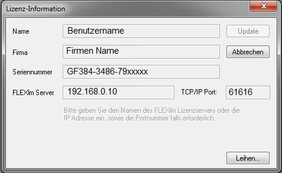
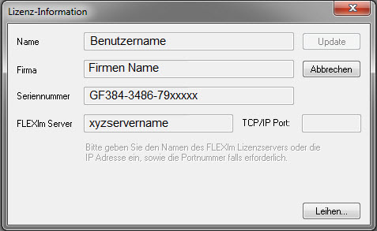
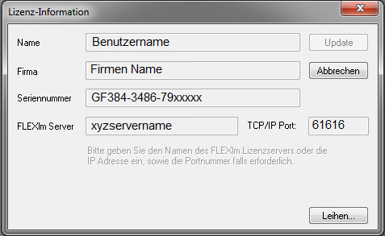

Zugriff von innen und außen auf eine Firewall zulassen
Firewall-Inside-Outside-Access
Häufig gibt es Origin-Clients, die von innerhalb und außerhalb einer Firewall auf einen FLEXnet-Server zugreifen. In diesem Fall können Origin-Clients unterschiedlich konfiguriert sein (auch wenn sie das nicht sein müssen). Unten beschreiben wir die einfachste Konfiguration für dieses Szenario, auch wenn es mehrere Möglichkeiten gibt, um ein Arbeitssystem zu erstellen.
Einfachste Konfiguration[bearbeiten]
- Konfigurieren Sie die Firewall und die externen Origin-Clients wie hier beschrieben.
- Auf den Origin-Clients, die sich innerhalb der Firewall befinden:
- Starten Sie Origin.
- Setzen Sie in Origins Dialog Lizenzinformationen den Wert im Textfeld FLEXlm-Server auf die interne IP-Adresse des Servers fest (oder auf einen qualifizierten Domainnamen, wenn der Name des Servers in DNS ist).
- Setzen Sie den TCP/IP-Port auf die Portnummer, die in der Zeile VENDOR in der Lizenzdatei des FLEXnet-Servers festgelegt ist:
VENDOR orglab port=61616
Beispiel: Für den FLEXnet-Server, dessen interne IP-Adresse 192.168.0.10 ist und dessen Port, festgelegt auf der Zeile VENDOR der Lizenzdatei des FLEXnet-Servers 61616 ist, sähe der Dialog Lizenzinformationen ungefähr folgendermaßen aus:

Alternative Konfigurationen[bearbeiten]
- Der FLEXnet-Server verwendet einen zweiten Port. Normalerweise wird dieser nicht verändert und liegt bei einem Standardwert im Bereich zwischen 27000-27009 (beachten Sie, dass dies ein separater Port ist und nicht der Port, der in der Zeile VENDOR definiert ist). Origin-Clients innerhalb der Firewall können diesen Port finden, ohne dass er vom Administrator festgelegt wurde. Um diese Konfiguration zu verwenden:
- Führen Sie Origin auf den Origin-Clients innerhalb der Firewall aus.
- Im Dialog Lizenzinformationen muss keine Portnummer festgelegt sein.
- Die weitere Einstellungen entsprechen den bereits beschriebenen.
Beispiel des Dialogs Lizenzinformationen für einen Origin-Client innerhalb einer Firewall in einem System, bei dem einige Origin-Clients sich außerhalb der Firewall befinden:

- Wenn der Standardbereich des Ports Ihres FLEXnet-Servers aus irgendeinem Grund nicht verwendet werden kann (z.B., wenn er bereits genutzt wird), kann ein anderer Port festgelegt werden. Dazu fügen Sie den Port in der Zeile SERVER in der Lizenzdatei des FLEXnet-Servers ein.
- Beispiel: Für einen FLEXnet-Server, dessen Name xyzservername ist sowie die MAC-Adresse 001111111111 und die festgelegte Portnummer 61615 hat, würde die Zeile SERVER folgendermaßen aussehen:
SERVER xyzservername 001111111111 61615
- Danach können alle Origin-Clients innerhalb der Firewall, die davon ausgingen, dass sich dieser Dienst im Standard-Portbereich befindet, keine Verbindung mehr herstellen. Um dies zu korrigieren, legen Sie den Port VENDOR im Dialog Lizenzinformationen fest. Beispiel des Dialogs Lizenzinformationen für einen Origin-Client innerhalb einer Firewall in einem System, bei dem einige Origin-Clients sich außerhalb der Firewall befinden: Die Zeile SERVER in der Lizenzdatei des FLEXnet-Servers legt eine Portnummer von 61615 fest. Die Origin-Clients werden jedoch noch immer mit dem Port VENDOR 61616 verbunden:

Zugriff durch eine Firewall zulassen